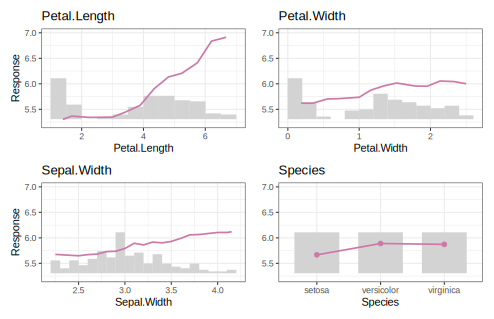

{marginalplot} provides high-quality plots for modeling.
Per feature and feature value, the main function marginal() calculates
- average observed values of the model response,
- average predicted values,
- partial dependence, and
- the exposure.
The workflow is as follows:
- Crunch values via
marginal()or the convenience wrappersaverage_observed()andpartial_dependence(). - Post-process the results with
postprocess(), e.g., to collapse rare levels of a categorical feature. - Plot the results with
plot().
Notes
- You can switch between {ggplot2}/{patchwork} plots and interactive {plotly} plots.
- The implementation is optimized for speed and convenience.
- Most models (including DALEX explainers and meta-learners such as Tidymodels) work out-of-the box. If not, a tailored prediction function can be specified.
- For multioutput models, the last output is picked.
- Case weights are supported via the argument
w. - Binning of numeric X is done by the same options as
stats::hist(). Additionally, very small and large values are winsorized (clipped) by default.
Installation
You can install the development version of {marginalplot} from GitHub with:
# install.packages("pak")
pak::pak("mayer79/marginalplot")Usage
library(marginalplot)
library(ranger)
set.seed(1)
fit <- ranger(Sepal.Length ~ ., data = iris)
xvars <- c("Sepal.Width", "Petal.Width", "Petal.Length", "Species")
marginal(fit, v = xvars, data = iris, y = "Sepal.Length") |>
postprocess(na.rm = TRUE) |>
plot()
More examples
Partial dependence only
The function partial_dependence() produces high-quality plots to study main effects. To visually see how important each feature is (regarding main effect strength), we switch on the option share_y and sort the plots by decreasing variance of the partial dependence function (exposure weighted).
library(marginalplot)
library(ranger)
set.seed(1)
fit <- ranger(Sepal.Length ~ ., data = iris)
xvars <- colnames(iris)[-1]
partial_dependence(fit, v = xvars, data = iris, breaks = 17) |>
plot(sort = TRUE, share_y = TRUE, scale_exposure = 0.2)
Before modeling
Before modeling, you might be interested in
- univariate distributions of potential features, and
- how the average response is associated with their values.
These infos are provided via average_observed().
Note: Sorting is done by decreasing variance of average observed values (exposure weighted).
library(marginalplot)
xvars <- colnames(iris)[-1]
average_observed(xvars, data = iris, y = "Sepal.Length") |>
plot(sort = TRUE, share_y = TRUE, rotate_x = 45)